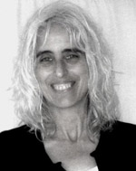
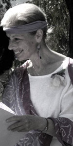

| ||||||||
|
||||||||
|
CALYX, the Friends of the Corvallis Benton County Library and The Corvallis Arts Center present: Poetry Workshops and Reading by award winning poets Willa Schneberg and Frances Payne Adler.   Funded by the Benton County Cultural Coalition. CALYX Inc: calyx@proaxis.com (541) 753-9384 |
READING: Saturday, Dec. 5th, 7pm Poetry of Resistance and Resilience At the Corvallis Public Library, Main Meeting Room. Willa and Fran present an evening of poems exploring poetry’s internal and external surfaces, its interaction with the world. The reading is free and open to the public. Refreshments will be served. WORKSHOPS: Saturday Dec. 5th, 10am-3:30pm At the Corvallis Arts Center, 700 SW Madison. The workshops are $10 each, which does not include lunch. Sign up and fee payment available at www.calyxpress.org or send a check to: CALYX Press, PO Box B, Corvallis OR 97339. Registration closes Dec. 3rd. Frances Payne Adler: Fire & Ink (10am-12:30pm) A social action writing workshop for activist and about-to-be-activist writers. If you’ve been wanting to write activist poems or stories or memoir, and there’s something holding you back, this is the workshop to shake it loose. Bring your ideas, the ones that won't let you go. Adler, who has been writing and teaching social action writing for 25 years, will guide you through the roadblocks. Adler is the author of Raising The Tents (CALYX Books), and several other books. Willa Schneberg: Dreaming the Poem (1pm-3:30pm) This workshop will be inspired by dream imagery of ourselves or others. The logic of dreams can shake up our traditional way of thinking or writing, but a dream is not itself a poem. We will experience how to transform dreams into poetry. Dream samples and poems inspired by dreams will be provided. Please bring dreams you feel safe enough to share. We will write together, and then read and discuss the fruits of the subconscious. Schneberg has received a grant in poetry from the Money for Women/Barbara Deming Memorial Fund, has read at the Library of Congress and has been a fellow at Yaddo and MacDowell. Her poetry collection Storytelling In Cambodia, was published by CALYX Books. |